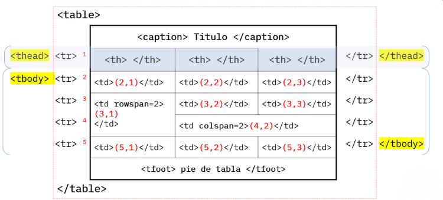

Las tablas HTML son herramientas usadas para organizar información en páginas web. Funcionan como las tablas que puedes encontrar en una hoja de cálculo o en un documento de texto, con filas y columnas que permiten presentar los datos de forma estructurada.
Las tablas HTML están compuestas por filas (definidas por la etiqueta <tr>) y celdas (definidas por las etiquetas <td> para datos comunes y <th> para encabezados). Las tablas también pueden tener otros elementos como título (<caption>) y grupos de filas para encabezado, cuerpo y pie (<thead>, <tbody>, y <tfoot>).
Son ideales para mostrar grandes cantidades de información de manera clara y fácil de leer en una página web. Por ejemplo:
Originalmente, las tablas HTML se utilizaban también para definir el diseño de una página web. Sin embargo, actualmente se recomienda usar hojas de estilo en cascada (CSS) para controlar la apariencia de las páginas, y las tablas HTML se utilizan principalmente para su propósito original: presentar datos tabulados.
Estas etiquetas se utilizan en combinación para estructurar y organizar el contenido de la tabla de manera semántica y accesible. La división en estas categorías facilita la comprensión y el mantenimiento del código HTML, así como también proporciona un contexto claro sobre el propósito de cada parte de la tabla.
A continuación veremos los tipos de tablas que podemos realizar:
La tabla simple muestra varios campos simultáneamente, donde el contenido de cada fila está conectado de forma lógica. Una tabla puede constar de tantas dimensiones y medidas como se necesiten.
Clic para ver ejemplo de tabla sencillaPara combinar o unir dos celdas en una tabla HTML, podemos usar los atributos colspan y rowspan, los cuales nos permiten fusionar celdas, creando celdas más grandes que ocupan el espacio de varias celdas. Esta tarea nos da como resultado como cuando queremos combinar dos celdas en una planilla de Excel.
Clic para ver ejemplo de tabla con columnas combinadasLas tablas anidadas en HTML es una técnica que permite colocar una tabla dentro de otra, creando una jerarquía de datos dentro de una estructura tabular. Esto puede ser útil para organizar información compleja de manera más lógica y visualmente atractiva.
Imagine una tabla principal que contiene información general, y dentro de algunas de sus celdas, se incluyen otras tablas más pequeñas que detallan información adicional relacionada con la celda principal. Esto es lo que se conoce como tablas anidadas en HTML.
Clic para ver ejemplo de tablas anidaddas